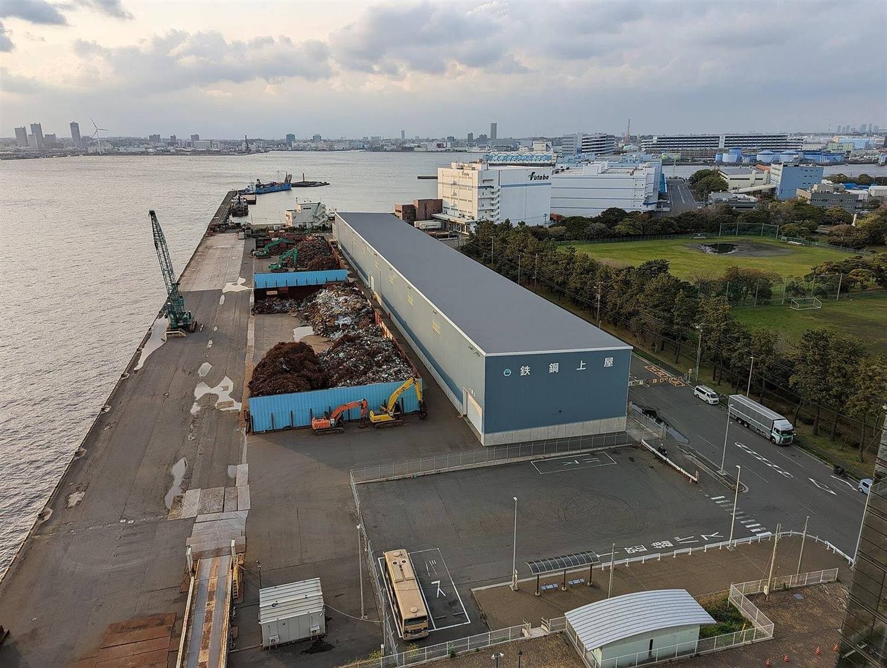
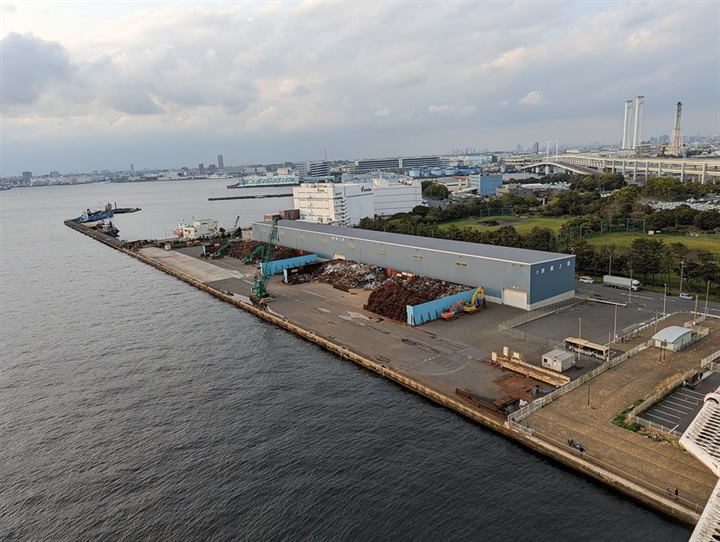
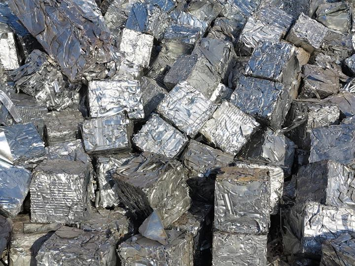
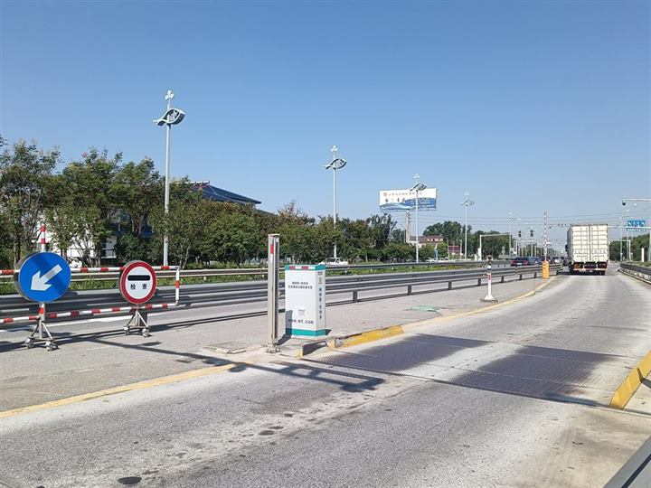
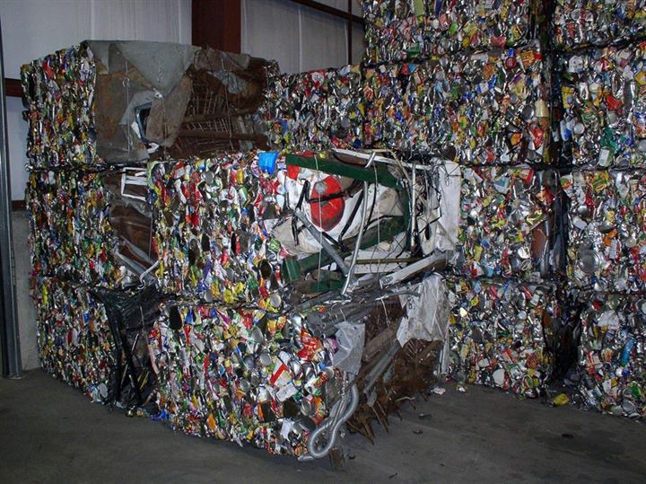

- Beranda
- Tentang
Profil perusahaan 2026
Tentang CV Indo Jaya
Profil perusahaan: perjalanan sejak 2010, nilai yang kami pegang, fasilitas, legalitas, dan tim yang menangani limbah logam dari pabrik dan kawasan industri.
Baca profil perusahaan
*Angka sementara untuk pratinjau desain.
01 Profil
Siapa CV Indo Jaya
Kami bukan pengepul biasa. CV Indo Jaya adalah perusahaan pengelola limbah logam yang bekerja di belakang layar industri manufaktur.
Kami membeli besi tua, tembaga, aluminium, kuningan, stainless, dan besi cor dari pabrik, gudang, serta fasilitas produksi. Material itu tidak berhenti di gudang: dipilah, diperiksa, lalu dikembalikan ke rantai pasok sebagai bahan baku.
Sejak 2010, fokus kami bukan sekadar transaksi. Kami membangun prosedur tetap — penawaran berbasis kadar, penimbangan resmi, dokumen serah terima, dan jadwal pengangkutan yang tidak mengganggu produksi.


“Limbah yang rapi dicatat adalah aset, bukan sampah.”
Butuh gambaran teknis? Lihat alur penjualan atau kontak tim untuk menjadwalkan diskusi.
02 Perjalanan
Dari satu gudang ke mitra industri
Perjalanan CV Indo Jaya dibentuk oleh kebiasaan sederhana: menimbang dengan benar, mencatat dengan rapi, dan mengangkut tepat waktu.
-
2010
Berdiri di Jakarta Timur
Mulai membeli besi tua dari bengkel dan gudang di sekitar kawasan industri.
-
2014
Ekspansi Jabodetabek
Menambah armada dan mulai melayani pengambilan terjadwal untuk pabrik.
-
2018
Standar penimbangan
Menetapkan jembatan timbang resmi dan berita acara untuk setiap pengiriman.
-
2022
Layanan volume besar
Menyusun pengambilan bertahap untuk limbah produksi rutin agar area pabrik tetap lapang.
-
2026
Kapasitas ±500 ton per bulan
Melayani pabrik, gudang, dan kawasan industri di Jabodetabek dan koridor Jawa Barat.
03 Arah
Visi dan misi
Alasan kami memilih cara kerja yang lebih lambat di awal: penawaran dan timbangan yang bisa dipertanggungjawabkan.
Visi
Menjadi mitra pengelola limbah logam yang paling bisa diandalkan industri di Indonesia — bukan yang paling murah, tapi yang paling jelas.
Misi
- Menjaga transparansi nilai material dari penawaran sampai pembayaran.
- Menyediakan administrasi yang siap dipakai untuk pembukuan dan audit.
- Mengembalikan material ke rantai pasok dengan proses yang bertanggung jawab.
04 Nilai
Hal yang tidak kami tawar
Nilai perusahaan bukan poster di dinding. Di CV Indo Jaya, semuanya terlihat dari cara material ditimbang, dihitung, dan didokumentasikan.
Integritas timbangan
Satu kilogram tetap satu kilogram. Berat bersih, potongan, dan hasil akhir dicatat di berita acara.
Transparansi angka
Nilai material dihitung dari jenis dan kadar, bukan taksiran. Penjual bisa membandingkan hitungannya.
Keselamatan kerja
Bongkar muat di area pabrik mengikuti prosedur keselamatan dan akses kendaraan yang disepakati.
Keberlanjutan
Material dipilah agar kembali menjadi bahan baku, bukan berakhir di tempat pembuangan.
05 Operasional
Gudang, timbangan, dan armada
Infrastruktur yang menentukan apakah limbah pabrik bisa keluar dengan rapi: area sortir, jembatan timbang, dan armada yang sesuai volume.

Jembatan timbang resmi
Setiap pengiriman ditimbang dan hasilnya dicatat di berita acara.

12 unit truk, 8 wilayah
Jangkauan operasional dari gudang Jakarta Timur ke koridor industri Jawa Barat.
- Jakarta
- Bekasi
- Cikarang
- Karawang
- Tangerang
- Bogor
- Bandung
- Purwakarta
06 Legalitas
Legalitas dan administrasi
Tim legal dan finance biasanya meminta ini lebih dulu. Kami siapkan sejak awal, bukan setelah transaksi berjalan.
Akta pendirian CV
Identitas badan usaha dan susunan pengurus.
Tersedia saat verifikasiNIB & izin usaha
Nomor induk berusaha dan izin kegiatan yang berlaku.
Tersedia saat verifikasiNPWP perusahaan
Administrasi perpajakan atas nama badan usaha.
Tersedia saat verifikasiDokumen pengangkutan
Berita acara penimbangan dan surat jalan setiap kiriman.
Diterbitkan per transaksiSalinan dokumen disiapkan untuk proses verifikasi mitra.
07 Tim
Divisi yang menangani limbah Anda
Satu tim, empat fungsi. Tidak ada lempar-lemparan saat ada pertanyaan teknis atau dokumen yang perlu dicek.
Pembelian
Menilai material, menyusun penawaran, dan menjaga komunikasi dengan tim purchasing pabrik.
Timbangan & QC
Memeriksa kadar dan kondisi material, mencatat berat, dan menyiapkan berita acara.
Logistik
Mengatur armada, rute, dan jadwal pengambilan agar produksi tetap berjalan.
Administrasi
Menyiapkan surat jalan, dokumen serah terima, dan arsip transaksi.
08 Dampak
Material yang kembali ke rantai pasok
Setiap ton scrap yang dipilah dengan benar mengurangi kebutuhan bahan baku baru dan membuat limbah pabrik punya nilai yang jelas.
Bagi kami, keberlanjutan bukan sertifikat yang dipajang. Ini soal memastikan material tidak tercampur, tidak terbuang, dan tercatat asal-usulnya.
Pemilahan di sumber
Material dipisahkan sejak di lokasi pabrik agar nilai dan kualitasnya terjaga.
Pengangkutan terkendali
Jadwal dan armada disesuaikan volume supaya material tidak menumpuk di area kerja.
Catatan material
Setiap pengiriman punya jejak dokumen: berat, jenis, dan tujuan pemrosesan.
FAQ
Pertanyaan tentang perusahaan
Hal-hal yang biasanya ditanyakan tim purchasing, legal, dan finance sebelum memulai kerja sama.
Apa itu CV Indo Jaya?
CV Indo Jaya adalah perusahaan pembeli dan pengelola limbah besi serta logam skala industri yang berbasis di Jakarta Timur. Kami bekerja dengan pabrik, gudang, dan kawasan industri.
Sejak kapan CV Indo Jaya berdiri?
Sejak 2010. Awalnya melayani bengkel dan gudang di sekitar kawasan industri, lalu berkembang ke Jabodetabek dan Karawang.
Apakah CV Indo Jaya punya legalitas usaha?
Beroperasi sebagai CV dengan dokumen pendirian, perpajakan, dan administrasi pengangkutan. Salinan dokumen disiapkan untuk mitra yang melakukan verifikasi.
Di mana kantor dan gudang CV Indo Jaya?
Kantor dan gudang operasional berada di kawasan industri Jakarta Timur. Lokasi lengkap dan titik peta ada di halaman kontak.
Berapa kapasitas dan armada yang tersedia?
Kapasitas penanganan sekitar 500 ton per bulan dengan 12 unit truk serta alat bongkar muat.
Industri apa saja yang dilayani?
Pabrik manufaktur, gudang distribusi, fasilitas produksi, dan kawasan industri dengan limbah logam rutin.
Apakah bisa kontrak pengelolaan jangka panjang?
Bisa. Untuk limbah produksi rutin, jadwal pengambilan dan dokumentasi dapat disusun berulang sesuai kebutuhan pabrik.
Apakah CV Indo Jaya menyediakan company profile?
Ya. Kami menyiapkan ringkasan profil perusahaan, cakupan layanan, dan dokumen pendukung untuk proses verifikasi mitra.